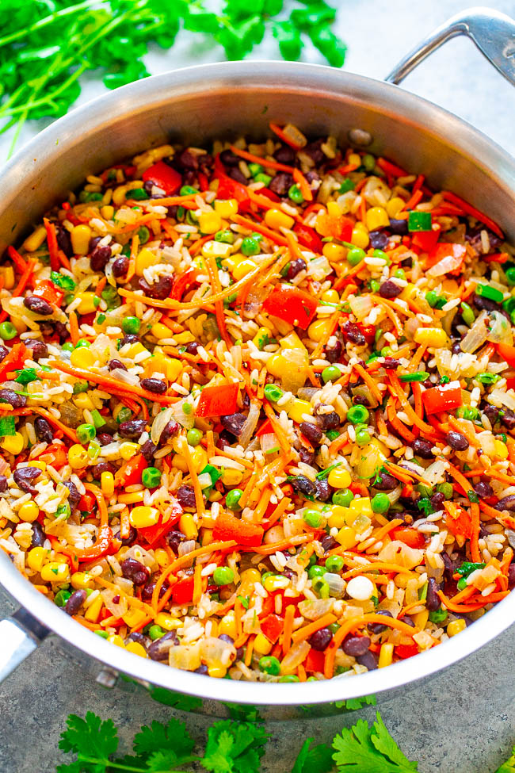

Rice and beans

Description
Simply put this is the best meal in the world. It ticks every important box that a meal should: Vegan, Tasty, Filling & Healthy
Ingredients
- Microwave rice
- Beans
- Any vegetables
- Ras el hanout
Instructions
- Heat oil in a big pan on med-high heat
- Add the beans and the veg to the pan
- Add salt and ras el hanout to taste
- Once everything is nearly cooked then add the rice to the pan
- Cook for a few more minutes then serve
Return to main menu